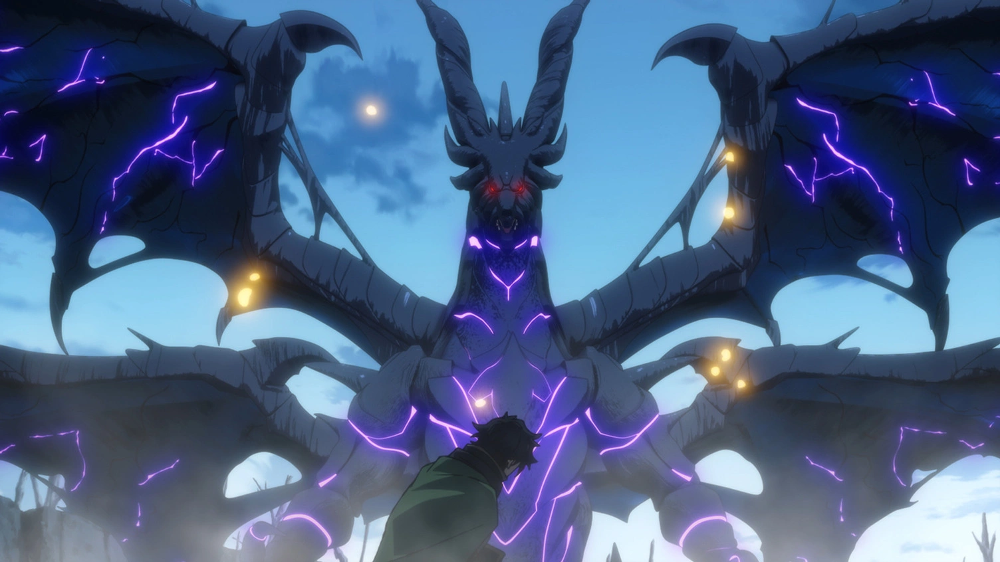

Raça Dragão

Voltar para Raças
Dragões
Os dragões são criaturas majestosas e poderosas, conhecidas por sua força, inteligência e conexão com os elementos. Eles são os guardiões dos segredos mais antigos do mundo e possuem uma longevidade impressionante. Suas escamas são quase impenetráveis, e seu hálito pode ser de fogo, gelo, eletricidade ou outras formas de energia elemental.
Características:
- Longevidade: Podem viver por milênios, acumulando sabedoria e poder.
- Elementos: Cada dragão está ligado a um elemento, como fogo, gelo, eletricidade ou terra.
- Forma Humanoide: Alguns dragões podem assumir forma humanoide para interagir com outras raças.
- Asas: A maioria dos dragões possui asas poderosas, permitindo voar grandes distâncias.
Habilidades:
- Sopro Elemental: Um ataque devastador baseado no elemento do dragão.
- Resistência Elemental: Imunidade ou resistência ao seu elemento nativo.
- Visão Noturna: Podem enxergar no escuro com clareza.
- Força Sobrenatural: São fisicamente muito fortes, capazes de destruir montanhas.